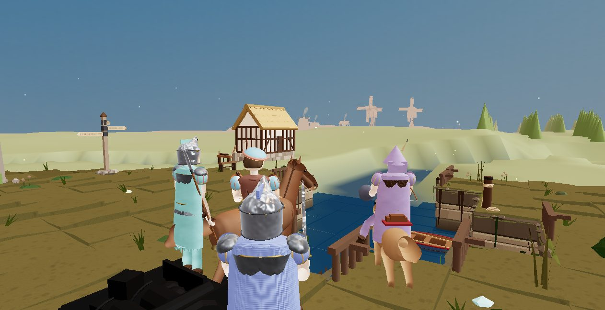

⚔ The World of Duchame
From the port town of Airport to the crater fortress of Castle Duchame, where Mildeonedehalkion waits.
- Raise a company of retainers who earn their rank
- Found the Keep, swear the Paladin's oath to Adon
- Fell each hold's guardian to open the way on